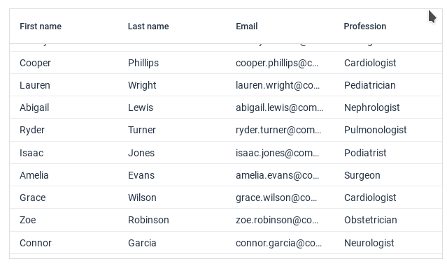

Lektion 4.4 — Teil 4: Webanwendungen mit Vaadin
Tabellen, Routing & Binding
Lernziele
- Daten mit einem
Gridals Tabelle darstellen und eigene Spalten mit Buttons ergänzenAbschnitt 1 - zwischen Views navigieren, auch mit Parametern (
HasUrlParameter,@OptionalParameter)Abschnitt 2 - Views über
@Routeper URL erreichbar machen und Query-Parameter auslesenAbschnitt 2 - die Nachteile des manuellen Kopierens zwischen Formular und Objekt erklärenAbschnitt 3
- Formulare mit dem
Binderan Model-Objekte binden (bindInstanceFields,readBean,writeBean)Abschnitt 3
1 — Tabellen mit Grid
Die Darstellung von Daten in Tabellen erfolgt mit dem Grid:
Grid<Person> grid = new Grid<>(Person.class, false);
grid.addColumn(Person::getFirstName).setHeader("First name");
grid.addColumn(Person::getLastName).setHeader("Last name");
grid.addColumn(Person::getEmail).setHeader("Email");
grid.addColumn(Person::getProfession).setHeader("Profession");
List<Person> people = DataService.getPeople(); // (1)
grid.setItems(people);(1) DataService ist hier eine fiktive Klasse, die eine Liste von Personen liefert – in unserem Projekt ist das Company.getInstance().getStaff().

new Grid<>(Person.class, false):falseverhindert, dass Vaadin automatisch für jede Eigenschaft eine Spalte anlegt.addColumn(Person::getFirstName)verwendet eine Methodenreferenz (Lektion 3.5): Für jede Zeile wirdgetFirstName()aufgerufen.- Alternativ:
addColumn("firstName")– der Name der Eigenschaft nach JavaBeans-Konvention; die Überschrift wird daraus erzeugt. addComponentColumn(e -> new Button(…))erzeugt eine Spalte mit Komponenten, z. B. Buttons zum Bearbeiten und Löschen.- Ändert sich die Liste, muss
grid.setItems(…)erneut aufgerufen werden.
2 — Navigation und Routing
Für die Navigation zwischen Views gibt es mehrere Varianten. Direkt zur View einer bestimmten Klasse navigiert man so:
UI.getCurrent().navigate(MyView.class, 18L);
MyView.class ist eine Referenz auf die Klasse der Ziel-View; danach können weitere Parameter folgen,
hier eine Id (18). Diese Id übernimmt die Methode setParameter der Ziel-View, die dafür das Interface
HasUrlParameter<T> implementiert, wobei T der Typ des Parameters ist (hier Long):
@Route(value = "my-view", layout = MainLayout.class)
public class MyView extends Div implements HasUrlParameter<Long> {
@Override
public void setParameter(BeforeEvent event,
@OptionalParameter Long id)
{
// ...
}
}
Die URL lautet dann my-view/18. @OptionalParameter erlaubt auch den Aufruf ohne Id
(my-view) – dann ist id null. setParameter wird vor dem
Anzeigen der View aufgerufen.
Oft soll eine View per URL verfügbar sein. Mit der @Route-Annotation gibt man die URL einer Komponente an;
sie ist dann unter some/path (angehängt an http://localhost:8080/) erreichbar:
@Route("some/path")
public class SomePathComponent extends Div {
public SomePathComponent() {
setText("Hello @Route!");
}
}Aus der Anwendung heraus können solche Views auch mit Query-Parametern aufgerufen werden …
getUI().ifPresent(ui -> ui.getPage().setLocation("some/path?id=" + something.getId()));… die dann in setParameter ausgelesen werden:
@Override
public void setParameter(BeforeEvent event,
@OptionalParameter String parameter)
{
// TODO: Exception handling
QueryParameters queryParameters = event.getLocation()
.getQueryParameters();
List<String> paramList = queryParameters.getParameters().get("id");
if (paramList != null && !paramList.isEmpty()) {
int id = Integer.parseInt(paramList.get(0));
// do something to prepare data with id
}
}paramList.get(0) liefert immer einen String; erst Integer.parseInt(…)
macht eine Zahl daraus. Steht in der URL keine Zahl, wirft parseInt eine
NumberFormatException, die behandelt werden muss (das „TODO“). Bei einem
Long-Parameter schreibt man die Zahl im Code mit L: 18L.
getUI() liefert ein Optional<UI>: die Browser-Sitzung, falls die Komponente gerade
angezeigt wird. ifPresent(ui -> …) führt das Lambda nur dann aus.
3 — Data Binding
In Views sollen meist bestimmte Datensätze angezeigt werden (außer beim Anlegen eines neuen). Daten aus einem
Employee-Objekt könnte man so ins Formular eintragen – mit erheblichen Nachteilen:
public class EmployeeFormView // ...
{
private TextField firstName = new TextField("First name");
private TextField lastName = new TextField("Last name");
// ...
private void readData(Employee emp) {
firstName.setValue(emp.getFirstName());
lastName.setValue(emp.getLastName());
}
// ...
private void storeData(Employee emp) {
emp.setFirstName(firstName.getValue());
emp.setLastName(lastName.getValue());
}
}
readData trägt zu Beginn die Daten der Instanz ins Formular ein, storeData speichert nach
dem Klick auf „Speichern“ die Formularwerte zurück. Bei vielen Attributen entsteht so jede Menge Code, und
jede Änderung muss an vielen Stellen konsistent nachgezogen werden – obwohl die Logik immer gleich ist. Die
bessere Lösung sind Bindings.
Binder<Employee> binder = new Binder<>(Employee.class);| Methode | Wirkung |
|---|---|
binder.bindInstanceFields(this) | bindet alle Felder der View an die Eigenschaften mit gleichem Namen und passendem Typ (z. B. Feld firstName ↔ getFirstName/setFirstName) |
binder.readBean(employee) | liest die Daten aus der Instanz und trägt sie ins Formular ein |
binder.writeBean(employee) | schreibt den Formularinhalt in die Instanz (ruft die Set-Methoden auf); wirft eine ValidationException bei ungültigen Eingaben |
binder.setBean(employee) | bindet dauerhaft: jede Änderung im Formular wird sofort ins Objekt übernommen |
binder.forField(feld).bind(Employee::getX, Employee::setX) | bindet ein einzelnes Feld explizit (wenn die Namen nicht passen) |
bindInstanceFields findet die Zuordnung nur über die Namen: Formularfeld
companyName ↔ getCompanyName()/setCompanyName(…). Ein Tippfehler im
Feldnamen führt dazu, dass das Feld einfach leer bleibt. Werfen die Set-Methoden eine CompanyException,
kommt sie bei writeBean „verpackt“ als Ursache (getCause()) einer
RuntimeException an.
Projektschritt
Mitarbeiterliste, Mitarbeiterformular und Binder
Drei Neuerungen: Die CompanyView verwendet einen Binder statt readData/storeData. Die EmployeesListView zeigt alle Mitarbeiter in einem Grid mit Bearbeiten- und Löschen-Buttons. Die EmployeeView ist unter /employee (neu) und /employee/1002 (bearbeiten) erreichbar – der Bearbeiten-Button navigiert mit der Id dorthin.
src/main/java/at/spengergasse/company/views/company/EmployeesListView.java Code anzeigen (78 Zeilen)
package at.spengergasse.company.views.company;
import at.spengergasse.company.model.Company;
import at.spengergasse.company.model.CompanyException;
import at.spengergasse.company.model.Employee;
import at.spengergasse.company.views.MainLayout;
import com.vaadin.flow.component.button.Button;
import com.vaadin.flow.component.button.ButtonVariant;
import com.vaadin.flow.component.grid.ColumnTextAlign;
import com.vaadin.flow.component.grid.Grid;
import com.vaadin.flow.component.html.Div;
import com.vaadin.flow.component.icon.Icon;
import com.vaadin.flow.component.icon.VaadinIcon;
import com.vaadin.flow.component.notification.Notification;
import com.vaadin.flow.component.orderedlayout.HorizontalLayout;
import com.vaadin.flow.router.PageTitle;
import com.vaadin.flow.router.Route;
/**
* Tabelle aller Mitarbeiter mit Bearbeiten- und Löschen-Button.
*/
@PageTitle("Employees")
@Route(value = "employees", layout = MainLayout.class)
public class EmployeesListView extends Div {
private final Grid<Employee> grid = new Grid<>(Employee.class, false);
public EmployeesListView() {
setSizeFull();
// Spalten über den Namen der Get-Methode (getFirstName -> "firstName")
grid.addColumn("firstName").setAutoWidth(true);
grid.addColumn("lastName").setAutoWidth(true);
grid.addColumn("email").setAutoWidth(true);
grid.addColumn("phone").setAutoWidth(true);
grid.addColumn("dateOfBirth").setAutoWidth(true);
grid.addColumn("role").setAutoWidth(true);
grid.addColumn("salary").setAutoWidth(true);
grid.addColumn("subcontractor").setAutoWidth(true);
// eigene Spalte mit Komponenten (Buttons) pro Zeile
grid.addComponentColumn(employee -> {
Button edit = new Button(new Icon(VaadinIcon.EDIT));
edit.addThemeVariants(ButtonVariant.LUMO_SMALL, ButtonVariant.LUMO_SUCCESS);
edit.addClickListener(e -> edit(employee));
Button delete = new Button(new Icon(VaadinIcon.TRASH));
delete.addThemeVariants(ButtonVariant.LUMO_SMALL, ButtonVariant.LUMO_ERROR);
delete.addClickListener(e -> delete(employee));
return new HorizontalLayout(edit, delete);
}).setHeader("Actions")
.setTextAlign(ColumnTextAlign.END)
.setFrozenToEnd(true)
.setAutoWidth(true)
.setFlexGrow(0);
refreshGrid();
add(grid);
}
// Navigation mit Parameter: /employee/1002
private void edit(Employee employee) {
getUI().ifPresent(ui -> ui.navigate(EmployeeView.class, employee.getId()));
}
private void delete(Employee employee) {
try {
Company.getInstance().fire(employee.getId());
refreshGrid();
Notification.show("Employee " + employee.getLastName() + " removed.");
} catch (CompanyException e) {
Notification.show("Error: " + e.getMessage());
}
}
private void refreshGrid() {
grid.setItems(Company.getInstance().getStaff());
}
}src/main/java/at/spengergasse/company/views/company/EmployeeView.java Code anzeigen (102 Zeilen)
package at.spengergasse.company.views.company;
import at.spengergasse.company.model.Company;
import at.spengergasse.company.model.CompanyException;
import at.spengergasse.company.model.Employee;
import at.spengergasse.company.views.MainLayout;
import com.vaadin.flow.component.button.Button;
import com.vaadin.flow.component.button.ButtonVariant;
import com.vaadin.flow.component.checkbox.Checkbox;
import com.vaadin.flow.component.combobox.ComboBox;
import com.vaadin.flow.component.datepicker.DatePicker;
import com.vaadin.flow.component.formlayout.FormLayout;
import com.vaadin.flow.component.html.H3;
import com.vaadin.flow.component.notification.Notification;
import com.vaadin.flow.component.orderedlayout.HorizontalLayout;
import com.vaadin.flow.component.orderedlayout.VerticalLayout;
import com.vaadin.flow.component.textfield.EmailField;
import com.vaadin.flow.component.textfield.IntegerField;
import com.vaadin.flow.component.textfield.TextField;
import com.vaadin.flow.data.binder.Binder;
import com.vaadin.flow.router.BeforeEvent;
import com.vaadin.flow.router.HasUrlParameter;
import com.vaadin.flow.router.OptionalParameter;
import com.vaadin.flow.router.PageTitle;
import com.vaadin.flow.router.Route;
/**
* Formular für einen Mitarbeiter.
* /employee -> neuer Mitarbeiter
* /employee/1002 -> Mitarbeiter mit Id 1002 bearbeiten
*/
@PageTitle("Employee")
@Route(value = "employee", layout = MainLayout.class)
public class EmployeeView extends VerticalLayout implements HasUrlParameter<Long> {
// Feldnamen = Attributnamen von Employee (für bindInstanceFields)
private final TextField firstName = new TextField("First name");
private final TextField lastName = new TextField("Last name");
private final EmailField email = new EmailField("Email address");
private final TextField phone = new TextField("Phone number");
private final DatePicker dateOfBirth = new DatePicker("Birthday");
private final ComboBox<Employee.Role> role = new ComboBox<>("Role");
private final IntegerField salary = new IntegerField("Salary");
private final Checkbox subcontractor = new Checkbox("Subcontractor");
private final Button save = new Button("Save");
private final Button cancel = new Button("Cancel");
private final Binder<Employee> binder = new Binder<>(Employee.class);
private Employee employee = new Employee();
public EmployeeView() {
role.setItems(Employee.Role.values());
email.setErrorMessage("Please enter a valid email address");
FormLayout form = new FormLayout();
form.add(firstName, lastName, dateOfBirth, phone, email, role, salary, subcontractor);
save.addThemeVariants(ButtonVariant.LUMO_PRIMARY);
HorizontalLayout buttons = new HorizontalLayout(save, cancel);
add(new H3("Personal information"), form, buttons);
save.addClickListener(e -> onSave());
cancel.addClickListener(e -> binder.readBean(employee));
binder.bindInstanceFields(this);
}
// wird beim Navigieren aufgerufen – vor dem Anzeigen der View
@Override
public void setParameter(BeforeEvent event, @OptionalParameter Long id) {
if (id == null) { // kein Parameter: neuer Mitarbeiter
employee = new Employee();
save.setText("Hire Employee");
binder.readBean(employee);
return;
}
try {
employee = Company.getInstance().getEmployee(id);
save.setText("Update");
} catch (CompanyException e) {
Notification.show(e.getMessage());
employee = new Employee();
}
binder.readBean(employee);
}
private void onSave() {
try {
binder.writeBean(employee); // Formular -> Objekt
if (!Company.getInstance().getStaff().contains(employee)) {
Company.getInstance().hire(employee); // neu: einstellen
}
Notification.show("Employee " + employee.getLastName() + " saved.");
getUI().ifPresent(ui -> ui.navigate(EmployeesListView.class));
} catch (Exception e) {
Throwable cause = e.getCause() != null ? e.getCause() : e;
Notification.show("Error: " + cause.getMessage());
}
}
}// verbindet die Felder companyName/companyAddress mit den gleichnamigen
// Get-/Set-Methoden von Company
private final Binder<Company> binder = new Binder<>(Company.class);
public CompanyView() {
createLayout();
addHandlers();
binder.bindInstanceFields(this); // Felder nach Namen binden
binder.readBean(Company.getInstance()); // Model -> Formular
}
// Formular -> Model; die Set-Methoden prüfen die Werte
private void storeData() {
try {
binder.writeBean(Company.getInstance());
Notification.show("Company name and address saved.");
} catch (Exception e) {
// Exceptions der Set-Methoden kommen "verpackt" an
Throwable cause = e.getCause() != null ? e.getCause() : e;
Notification.show("Error: " + cause.getMessage());
}
}📁 Stand nach dieser Lektion: beispiele/4.4/
Häufige Fehler
3 Fehler · zum Aufklappen klicken
Nach readBean bleibt ein Feld leer, ohne Fehlermeldung.
Der Feldname muss exakt dem Eigenschaftsnamen entsprechen (dateOfBirth, nicht birthday), und der Typ muss passen (DatePicker ↔ LocalDate). Sonst mit binder.forField(…).bind(…) explizit binden.
Nach dem Löschen eines Mitarbeiters steht er weiterhin in der Tabelle.
Das Grid kennt nur die Liste, die mit setItems übergeben wurde (eine Kopie, getStaff()). Nach jeder Änderung grid.setItems(Company.getInstance().getStaff()) erneut aufrufen.
Der Menüpunkt „New Employee“ (/employee ohne Id) führt zu Could not navigate.
Ohne @OptionalParameter ist der Parameter Pflicht. Annotation ergänzen und in setParameter den Fall id == null (neuer Mitarbeiter) behandeln.
Quiz
4 Fragen · zum Aufklappen klicken
Frage 1 Wozu dient die Komponente Grid?
Grid<T> bekommt die Objekte mit setItems(…). Spalten können aus Get-Methoden entstehen oder eigene Komponenten wie Buttons enthalten.Frage 2 Wie bekommt eine Vaadin-View einen Parameter aus der URL, z. B. /kunde/3?
@OptionalParameter darf der Parameter auch fehlen – so kann dieselbe View z. B. neue und bestehende Datensätze bearbeiten.Frage 3 Was ist der Nachteil, wenn man Werte von Hand zwischen Formular und Objekt kopiert?
Mehrere Antworten sind richtig.
Binder verknüpft Felder und Attribute einmal und übernimmt das Kopieren samt Typumwandlung.Frage 4 Was macht binder.writeBean(bean)?
readBean: Objekt → Formular. bindInstanceFields(this) verbindet dabei Felder und Attribute mit gleichem Namen automatisch.